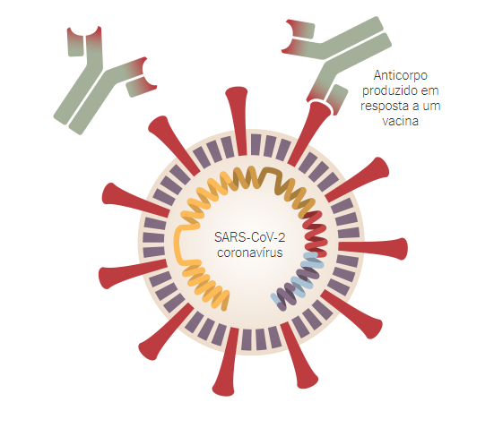
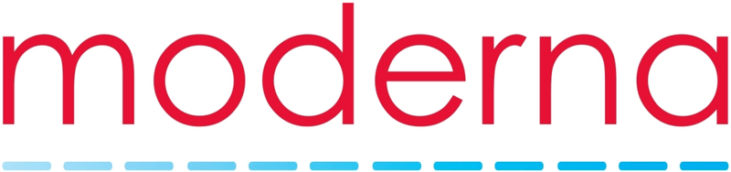

O grupo chegou ao mesmo consentimento em relação ao programa de vacinação em massa, atualmente existe uma grande necessidade,pois Indústria farmacêutica e cientistas estão em busca para criar vacina contra o novo coronavírus. O novo vírus pegou milhares de pessoas de surpresa e com a falta de um antivirus que combata o virus, milhares de pessoas morreram. A campanha de vacinação existe para que todos possam se imunizar contra doenças, tentando se previnir o máximo para que não haja uma nova pandemia e muita gente acaba deixando de levar seus filhos para tomar vacina ocasionando graves doenças, pois os pequeninos acabam não tendo anticorpos para combater os vírus.
As vacinas normalmente requerem anos de pesquisa e testes antes de chegar à clínica, mas os cientistas estão correndo para produzir uma vacina contra o coronavírus segura e eficaz no próximo ano . Os pesquisadores estão testando 42 vacinas em ensaios clínicos em humanos, e pelo menos 92 vacinas pré-clínicas estão sob investigação ativa em animais. 
O trabalho começou em janeiro com a decifração do genoma SARS-CoV-2 . Os primeiros testes de segurança de vacinas em humanos começaram em março, mas o caminho à frente permanece incerto. Algumas tentativas falharão e outras podem terminar sem um resultado claro. Mas alguns podem ter sucesso em estimular o sistema imunológico a produzir anticorpos eficazes contra o vírus. Saiba mais...

A empresa alemã BioNTech firmou parcerias com a Pfizer , com sede em Nova York, e a farmacêutica chinesa Fosun Pharma para desenvolver uma vacina de mRNA a ser administrada em duas doses. Em maio, eles lançaram um ensaio de Fase 1/2 com duas versões da vacina. Eles descobriram que ambas as versões faziam com que os voluntários produzissem anticorpos contra o SARS-CoV-2, bem como células imunes chamadas células T que respondem ao vírus. Eles descobriram que uma versão, chamada BNT162b2, produzia significativamente menos efeitos colaterais, como febre e fadiga, e então a escolheram para passar para os testes de Fase 2/3. No dia 27 de julho, as empresas anunciaram o lançamentode um estudo de Fase 2/3 com 30.000 voluntários nos Estados Unidos e em outros países, incluindo Argentina, Brasil e Alemanha. Em um estudo provisório, as empresas relataram que, após receber a primeira dose, os voluntários experimentaram efeitos colaterais leves a moderados. Em 12 de setembro, a Pfizer e a BioNTech anunciaram que buscariam expandir seu teste nos Estados Unidos para 43.000 participantes.
No mesmo mês, o governo Trump fechou um contrato de US $ 1,9 bilhão para 100 milhões de doses a serem entregues até dezembro e a opção de adquirir mais 500 milhões de doses. Enquanto isso, o Japão fechou um acordo para 120 milhões de doses, e a União Europeia conseguiu comprar 200 milhões de doses.
Em setembro, o presidente-executivo da Pfizer disse que saberia se a vacina funcionaria logo em outubro de 2020. Se aprovada, a Pfizer disse que espera fabricar mais de 1,3 bilhão de doses de sua vacina em todo o mundo até o final de 2021. https://biontech.de/
Uma década atrás, pesquisadores do Beth Israel Deaconess Medical Center em Boston desenvolveram um método para fazer vacinas a partir de um vírus chamado Adenovírus 26 , ou Ad26 para breve. A Johnson & Johnson desenvolveu vacinas para o Ebola e outras doenças com o Ad26 e agora já fez uma para o coronavírus. Em março, eles receberam US $ 456 milhões do governo dos Estados Unidos para apoiar sua mudança para a produção. A vacina forneceu proteção em experimentos com macacos . A Johnson & Johnson começou os testes de Fase 1/2 em julho e lançou um teste de Fase 3 com até 60.000 participantes em setembro.
Em agosto, o governo federal concordoupagar US $ 1 bilhão por 100 milhões de doses se a vacina for aprovada. A meta da empresa é produzir pelo menos um bilhão de doses em 2021. https://www.jnjbrasil.com.br/

A Moderna desenvolve vacinas baseadas em RNA mensageiro (mRNA) para a produção de proteínas virais no corpo. Eles ainda precisam trazer um para o mercado. Em janeiro, eles começaram a desenvolver uma vacina para o coronavírus e, desde então, o governo tem financiado os esforços da Moderna, fornecendo quase US $ 1 bilhão. Em parceria com o National Institutes of Health , eles descobriram que a vacina protege macacos do coronavírus. Em março, a empresa colocou a primeira vacina Covid-19 em testes em humanos , que produziram resultados promissores . A vacina avançou para os testes de Fase 3, que começaramem 27 de julho. O teste final está inscrevendo 30.000 pessoas saudáveis em cerca de 89 locais nos Estados Unidos. Em 11 de agosto, o governo concedeu à empresa um adicional de US $ 1,5 bilhão em troca de 100 milhões de doses, caso a vacina se mostrasse segura e eficaz. O Canadá concordou em setembro em adquirir 20 milhões de doses.
Em julho, a Moderna perdeu uma disputa de patente sobre parte de sua tecnologia de vacinas. No mês seguinte, a empresa afirmou não ter certeza de ter sido a primeira a fazer as invenções reivindicadas em suas patentes, incluindo sua vacina contra o coronavírus.
Em 17 de setembro, Moderna compartilhouseu protocolo para determinar se sua vacina era segura e eficaz. Eles planejaram esperar até que um número significativo de voluntários adoecesse com Covid-19 para ver quantos haviam sido vacinados. Pode demorar até o final de 2020 ou início de 2021 para atingir os números necessários. https://www.modernatx.com/
A empresa chinesa CanSino Biologics desenvolveu uma vacina baseada em um adenovírus denominado Ad5, em parceria com o Instituto de Biologia da Academia de Ciências Médicas Militares do país . Em maio, eles publicaram resultados promissores de um teste de segurança de Fase 1 e, em julho, relataram que seus testes de Fase 2 demonstraram que a vacina produziu uma forte resposta imunológica. Em um movimento sem precedentes, os militares chineses aprovaram a vacina em 25 de junho por um ano como uma “droga especialmente necessária”. CanSino não disse se a vacinação seria obrigatória ou opcional para os soldados. A partir de agosto, o CanSino começou a realizar testes de Fase 3 em vários países, incluindo a Arábia Saudita, Paquistão e Rússia .
http://www.cansinotech.com/
| Estados | Casos | Mortes | Atualizados |
|---|---|---|---|
| Estados | Casos | Mortes | Atualizado |
|---|